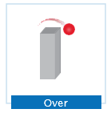
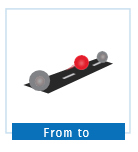
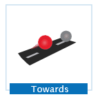
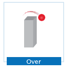
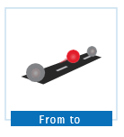
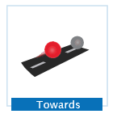

Tópico 6: Adjectives, Travel, courses' review from 1 to 6
3.1 I’m sorry
Já em Nova Iorque, Christine conta à Rosa sobre as experiências que está vivendo no seu novo trabalho. Durante a conversa, ela é interrompida pela campainha. Veja o que aconteceu:
Dube: I’m sorry, Chris, I was a douche. I shouldn’t stop you from following your dreams, I’m sorry.
Christine: Dube, what are you doing here?
Dube: I’m proposing, Christine, again! I got a job here at one of the stores Billy’s uncle has in town. I can follow my dreams later, Chris. It’s your turn now.
Christine: Oh! Dube!
Nesse diálogo, você pôde ver alguns itens linguísticos que foram apresentados ao longo do curso. Acompanhe a revisão do conteúdo para lembrar e exercitá-los novamente.
3.2 Verb to be
No reencontro entre Dube e Christine você pode perceber o uso do verbo To be. Veja: "I’m sorry, Chris. It’s your turn now".
O verbo To be possui três formas diferentes no presente, dependendo da pessoa (sujeito) com o qual ele é utilizado. O quadro a seguir apresenta a conjugação e as contractions deste verbo:
| Subject | Verb To be | Contraction |
|---|---|---|
| I | am | I'm |
| You | are | You’re |
| He | is | He’s |
| She | is | She’s |
| It | is | It’s |
| We | are | We’re |
| You | are | You’re |
| They | are | They’re |
Rosa, depois de falar com Christine ao telefone, fica ansiosa para contar a Carly que Dube realmente foi até Nova Iorque para reconquistar o amor da amiga. Acompanhe o diálogo:
Rosa: Carly, guess what! Dube is in New York, in Christine’s house!
Carly: Really? That’s great! So, love’s in the air! Life is perfect, love always wins!
Rosa: Yeah, I see you are a living proof of that.
Carly: I sure am. Billy is an amazing guy. But let’s talk about you. Are you excited about your trip?
Rosa: Yes, I am!
Carly: And are you nervous?
Rosa: Hmm… no, I’m not. Canada is not that different from the USA, right?
Carly: I guess not, but in some parts of the country people speak French, not English.
Rosa: Well, I don’t speak French fluently, but I usually get by with a dictionary. People often try to help you when they see you’re trying to communicate in their language.
Carly: That’s true.
Rosa: And I always hear people say that the Canadian people are very nice and friendly, so I think there’s a good chance I can have a great trip.
Carly: Of course! And, worst case scenario, you can get an interpreter!
Rosa: Yeah, I guess so.
Carly: OK, now tell me the truth: are you gonna tell your Brazilian friends that you had a nice time here in Chicago?
Rosa: Of course! Everything was awesome! I learned so many things, met so many nice people… in fact, I’m going to miss all of you while I’m away.
Carly: And when are you going to leave?
Rosa: On Friday, at 8:30 A.M. My flight is with the same airline as Carlton’s flight, but mine is a bit earlier.
Carly: Is Carlton going to Canada?
Rosa: Yes, he is probably going there to… actually, I have no idea what he’s going to do there. I think he’s going somewhere next to the border, but I may be wrong.
Carly: Carlton is a mystery; I can’t understand him at all. He’s more secretive than any person I know and definitely the most hard-working!
Rosa: Yeah, it’s hard for me to get him too, but many times people are just shy and some are simply not very talkative.
Carly: I guess you’re right. Hey, is everything ready - your documents, your bags…?
Rosa: No, I’m still putting it all together to see how many bags I’m going to need.
Carly: May I suggest something?
Rosa: Sure!
Carly: Don’t pack too many clothes. Leave some space to buy some winter wear at the shops in Montreal. They have fantastic stuff there. Oh, and don’t take too much luggage, it’s easier to travel light.
Rosa: Thanks! Those are great tips!
Carly: Would you like my help to pack?
Rosa: No, thanks. That’s OK. I’m going to do it tonight. Let’s enjoy our time together before I go.
Carly: Yes, let’s!
Para formar as negativas com o verbo To be acrescenta-se not após o verbo. Veja a fala de Rosa:
Rosa: Hmm… no, I’m not. Canada is not that different from the USA, right?
Já nas perguntas, o verbo To be aparece antes do sujeito. Observe as perguntas que Carly faz a Rosa:
Carly: I sure am. Billy is an amazing guy. But let’s talk about you. Are you excited about your trip?
Rosa: Yes, I am!
Carly: And are you nervous?
Neste diálogo, apareceu o artigo indefinido an. Acompanhe o tópico a seguir para revisá-lo juntamente com o artigo definido a.
3.3 Indefinite and definite articles
Os indefinite articles a e an são utilizados para o masculino e feminino apenas com palavras no singular. Veja nas frases:
- Well, I don’t speak French fluently, but I usually get by with a dictionary.
- I think there’s a good chance I can have a great trip.
- Of course! And, worst case scenario, you can get an interpreter!
O definite article the serve para masculino, feminino, singular e plural. Observe a frase:
- And I always hear people say that the Canadian people are very nice and friendly.
Em síntese, os indefinite ou definite articles não variam de acordo com o gênero (masculino e feminino).
A seguir, você irá retomar as preposições de lugar que permitem localizar algo ou alguém no espaço.
3.4 Prepositions of place
Quando indicamos a localização de algo ou alguém, sempre fazemos uso de prepositions of place. Observe na ilustração a relação de posição dos objetos:
 





Descrição das imagens: As imagens são de bolas vermelhas colocadas em diversas posições em relação a uma caixa ou a uma estrada para indicar as preposições de lugar.
Observe o uso de algumas dessas prepositions nas falas de Carly e Rosa:
- OK, now tell me the truth: are you going to tell your Brazilian friends that you had a nice time here in Chicago?
- Leave some space to buy some winter gear at the shops in Montreal.
Nesta última frase, Carly utiliza a forma imperativa para dar um conselho a Rosa. Acompanhe o tópico seguinte para revisar esta forma verbal.
3.5 Imperative Form
A Imperative form é utilizada para dar ordens, conselhos e instruções, ou informar as direções. Na forma afirmativa utiliza-se apenas o verbo, sem sujeito. Veja:
- Leave some space to buy some winter wear at the shops in Montreal.
No caso de uma instrução, ordem ou conselho na forma negativa, acrescenta-se a partícula don’t antes do verbo. Observe:
- Don’t pack too many clothes. They have fantastic stuff there. Oh, and don’t take too much luggage.
No tópico seguinte você irá revisar as horas e as preposições at, on e in para falar sobre tempo.
3.6 Talking about time
Podemos informar as horas de uma forma bem simples, para dizer que são 6h47min basta dizer six forty-seven. Já quando se trata da hora inteira (em ponto), acrescentamos a expressão o’clock ao número. Por exemplo: "It’s five o’clock".
Quando já se passaram trinta minutos, podemos dizer as horas de duas maneiras. Observe:
- Five thirty; or
- Half past five.
O mesmo ocorre com os demais horários compostos. Observe e relembre com os exemplos a seguir:
- Carlton vai viajar em um voo mais tarde, às 19:40. Neste caso, podemos dizer:
- Seven forty; or
- Twenty to eight.
- A previsão de chegada ao Canadá é às 22:05, ou seja:
- Ten oh-five; or
- Five past ten.
Quando se fala de tempo, seja ele em horas, dias, meses ou anos , utiliza- se as preposições at, on e in:
- Utiliza-se at com as horas.
- On Friday, at 8:30 AM.
- Com os dias da semana, utiliza-se on.
- Carlton works at the Plaza restaurant on Thursdays.
- Com os meses do ano, utiliza-se in.
- Rosa is going to Canada in December.
3.7 Talking about possession
Em inglês existe mais de uma possibilidade para expressar a posse de algo. Uma delas é por meio do uso dos possessive adjectives, a outra é por meio dos possessive pronouns.
Os possessive adjectives, como o próprio nome diz, são adjetivos e, por isso, são sempre seguidos de um substantivo. Observe que, ao contrário dos possessive adjectives, os possessive pronouns não são seguidos de substantivo. Veja na tabela:
| Possesive adjectives | Possesive pronoun |
|---|---|
| This is my book. | This is mine. |
| Where is your pen? | Where is yours? |
| His boots are beautiful. | His are beautiful. |
| Her dress is green. | Hers is green. |
| We like our classes. | We like ours. |
| They read their English books. | They read theirs. |
Perceba que, com exceção de my, cujo correspondente é mine, a diferença na escrita do possessive pronoun é o acréscimo de um “s” (yours, hers, ours e theirs). Uma vez que his já possui um “s” final, ele não sofre alteração. Por fim, preste atenção que o possessive adjective it não possui o possessive pronoun correspondente.
Outra maneira de expressar a posse é o possessive case. Neste caso, o possuidor recebe o 's no final, e aquilo que é possuído vem logo a seguir. Assim, se você for mencionar uma viagem que Rosa fará ou fez, basta dizer Rosa’s trip.
No diálogo entre Rosa e Carly, o possessive case aparece na seguinte fala:
- "On Friday, at 8:30 AM. My flight is with the same airline as Carlton’s flight, but mine is a bit earlier".
Quando temos um substantivo plural terminado em “s”, acrescenta-se apenas o apóstrofo:
- Her friends’ trip was fantastic.
Quando houver um substantivo irregular no plural, como por exemplo, children, acrescenta-se ’s:
- The children’s seats are by the window.
Nomes próprios terminados em “s”, como por exemplo, Chris ou Janis, acrescenta-se o ’s:
- Chris’s suitcase is old.
- Janis’s plane is big.
E, por fim, quando você precisar mencionar vários donos, terá que analisar a situação. Observe:
- John, Mary and Pete’s flight is early. (o voo é dos três ao mesmo tempo).
- John’s, Mary’s and Pete’s flights are early. (cada um tem um voo).
A seguir, revise o Present Simple e Adverbs and Expressions of Frequency.
3.8 Present Simple and Adverbs/ Expressions of Frequency
O Present Simple é utilizado quando se faz afirmações referentes a algo vivido no presente, tratando sempre de hábitos, rotinas e ações que ocorrem com regularidade . Acompanhe exemplos desses usos na conversa de Rosa e Carly:
Well, I don’t speak French fluently, but I usually get by with a dictionary.
People often try to help you when they see you’re trying to communicate in their language.
And I always hear people say that the Canadian people are very nice and friendly, so I think there’s a good chance I can have a great trip.
Quando Rosa utiliza usually, often e always, ela está se referindo a ações que ocorrem com regularidade através do uso de advérbios de frequência.
Em frases com o verb To be, os adverbs of frequency são posicionados depois de am, is e are:
- They’re always friendly at that travel agency.
- I’m usually excited before an air trip.
Além dos adverbs of frequency, podemos usar outras expressões que indicam a quantidade de vezes que algo é ou foi realizado. Lembre-se que estas expressions of frequency podem vir no início ou no final da frase. Observe:
- They travel to see their friends twice a year.
- She takes a flight every week.
- We pack our bags every night.
Utilizamos o Present Simple associado aos adverbs e as expressions of frequency. Por este motivo é importante relembrar o uso deste tempo verbal nas formas afirmativa, negativa e interrogativa.
Na forma afirmativa, o Present Simple dos verbos nada mais é do que o infinitivo do verbo sem a partícula to . Veja:
- I guess not, but in some parts of the country people speak French, not English.
- I usually get by with a dictionary. People often try to help you when they see you’re trying to communicate in their language.
- And I always hear people say that the Canadian people are very nice and friendly, so I think there’s a good chance I can have a great trip.
Nesses exemplos não aparece, entretanto, nenhuma frase com as pessoas he, she ou it, nas quais o verbo sofre uma pequena modificação: ele é acrescido de -s, -es ou -ies, com exceção do verbo To have que muda para Has. Veja as frases abaixo:
- Carlton relaxes for five minutes before his night shift.
- Dube plays video games in his free time.
- Rosa studies at the Columbus College of Chicago.
Nas frases negativas, utilizamos o seguinte auxiliar:
- do + not = don’t .
- does + not = doesn’t
Observe o uso da forma negative nas frases a seguir:
- I don’t speak French fluently.
- I don’t have any idea where.
Se essas frases fossem a respeito de ou sobre Rosa, elas seriam:
- She doesn’t speak French fluently.
- She doesn’t have any idea where.
Nas perguntas, os auxiliares do e does também aparecem posicionados na frente do sujeito. Por exemplo:
- Where do you stay when you travel?
- How do you travel when you visit your family?
- What does she wear on plane trips?
- Why does he pack so many clothes?
Quando as perguntas são yes/no questions, as short answers utilizam o mesmo auxiliar da pergunta. Acompanhe:
| Question | answers | |
|---|---|---|
| Do you have many bags? | Yes, I do. | No, I don’t. |
| Does she enjoy flying? | Yes, she does. | No, she doesn’t. |
No tópico a seguir, você irá revisar o uso do verbo There to be para indicar a existência de algo.
3.9 There to be
O verbo There to be significa haver ou existir. No entanto, não é necessário que exista algo físico, concreto. Veja as frases no diálogo entre Rosa e Carly:
| I think there’s a good chance I can have a great trip. | |
| Is there a good chance I can have a great trip? | |
| Yes, there is. | No, there isn’t. |
| There isn’t a good chance I can have a great trip. | |
| There are many great shops in Montreal. | |
| Are there many great shops in Montreal? | |
| Yes, there are. | No, there aren’t. |
| There aren’t many great shops in Montreal. | |
Lembre-se que, para expressar posse utilizando o verbo ter, utiliza-se o verbo To have.
- I can have a great trip.
- They have fantastic stuff there.
O verbo There to be pode ser utilizado junto com substantivos contáveis e incontáveis. No tópico seguinte, acompanhe o uso de some e any com estes substantivos.
3.10 Some, Any and Countable/Uncountable Nouns
Ao utilizar o verbo There to be é preciso considerar que estamos lidando com itens no singular ou no plural, o que nos leva à questão dos countable ou uncountable nouns. Os countable nouns são aqueles substantivos que podem ser contados em unidades e, portanto, podem ser colocados e utilizados no plural. Já os uncountable nouns só podem ser utilizados no singular. Observe este trecho do diálogo de Rosa e Carly:
Carly: Don’t pack too many clothes. Leave some space to buy some winter gear at the shops in Montreal. They have fantastic stuff there. Oh, and don’t take too much luggage!
Rosa: Thanks! Those are great tips!
Na Conversa entre Carly e Rosa, as amigas usam os termos clothes e tips. Tanto roupas quanto dicas são contáveis e, portanto, são countable nouns. Já quando Carly usa o termo luggage (bagagem), ela se refere a algo que não pode ser contado em unidades, logo, é um uncountable noun.
Para perguntar quanto há de alguma coisa contável, utilizamos how many:
- How many bags are you taking on your trip?
E se for incontável, utilizamos how much:
- How much luggage are you taking on your trip?
Quando queremos dizer que há muito de alguma coisa, utilizamos a lot of ou lots of, que podem ser usadas tanto para countable quanto para uncountable nouns.
- There’s a lot of stuff in your bags!
- There are lots of bags for you to carry on your trip.
Já para dizer que há algo em excesso, enfatizar que a quantidade é maior do que o necessário, utiliza-se too com many e much, que são utilizados respectivamente com countable nouns e uncountable nouns. Observe o uso de many e much nas frases que seguem:
- Don’t pack too many clothes.
- Oh, and don’t take too much luggage.
Para dizer que não há nada de alguma coisa, utilizamos any, que pode ser usado tanto com countable quanto uncountable nouns. Acompanhe algumas situações de uso:
Nas frases negativas, any significa nenhum/nenhuma:
- There isn’t any problem with my visa.
- There aren’t any plane tickets to Toronto.
Nas frases interrogativas, any assume o significado de algum(s)/alguma(s) com o sentido de qualquer um ou qualquer quantidade:
- Is there any plane ticket to Toronto?
- Are there any winter clothes in your luggage?
Também podemos expressar quantidade utilizando some. Ele é utilizado em frases afirmativas, tanto com countable quanto com uncountable nouns. Some significa algum(s)/alguma(s) no sentido de uma quantidade indefinida. Acompanhe o que Carly diz a Rosa:
- Leave some space to buy some winter gear at the shops in Montreal.
- Many times people are just shy and some are simply not very talkative.
Na frase acima, Carly se refere a uma quantidade indefinida de espaço na mala de Rosa (some space = algum espaço), assim como a uma quantidade indefinida de equipamento de inverno (some winter gear = alguns equipamentos de inverno). Nesses dois casos, space e winter gear são uncountable nouns, mas quando Rosa diz a Carly que "some [people] are simply not very talkative", ela está referindo-se a uma quantidade indefinida de pessoas, que é um countable noun.
No tópico a seguir você irá revisar o Present Continuous para falar sobre ações em andamento.
3.11 Present Continuous
Outro tempo verbal utilizado para se falar sobre o presente é o Present Continuous. Diferentemente do Present Simple, utilizado para expressar hábitos, rotinas e ações que ocorrem com regularidade, o Present Continuous expressa ações que estão ocorrendo no momento da fala ou em andamento e, por essa razão, frequentemente vem acompanhado de expressões como now, at the moment, currently , etc.
Quando Rosa diz a Carly “I’m still putting it all together”, quer dizer que a ação de reunir as coisas para a viagem ainda está em andamento enquanto ela conversa com a amiga, mas a ação ainda não foi concluída.
É possível identificar um verbo no Present Continuous pela terminação -ing adicionada ao verbo principal. Leia alguns exemplos retirados da conversa entre as garotas:
| I am (not) packing my bags. | |
| Christine is (not) living in New York. | |
| Is Christine adapting to her new life? | |
| Yes, she is. | No, she isn’t. |
| Carlton and Rosa are (not) preparing to travel to Canada. | |
| Are Dube and Christine talking? | |
| Yes, they are. | No, they aren’t. |
Para formar corretamente os verbos no Present Continuous, lembre-se de que, se o verbo terminar em “ie”, essas letras serão substituídas por “y” antes do acréscimo do -ing. Exemplos:
| die | dying |
| lie | lying |
| tie | tying |
Depois de relembrar como conjugar os verbos no Present Continuous, acompanhe, no tópico a seguir, alguns Modal Verbs.
3.12 Can and may
Can e May pertencem a um grupo de verbos conhecido como Modal Verbs. Esses verbos não variam em função do sujeito com que são utilizados e, tampouco, o verbo que os acompanha muda ou sofre qualquer acréscimo. Observe os exemplos do diálogo entre Rosa e Carly:
I can have a great trip.
You can get an interpreter.
I can’t understand him at all.
May I suggest something?
I may be wrong.
Can
Primeiramente, vamos falar de Can, que pode indicar:
- Habilidade ou falta dela, como na fala de Carly:
- I can’t understand him at all.
Ou seja, ela não pode ou não consegue entender Carlton de jeito nenhum.
- Possibilidade, como na fala de Rosa:
- I can have a great trip.
Nessa frase, é possível que ela tenha uma ótima viagem.
- Outro exemplo é quando Carly brinca com Rosa sobre a possibilidade de ela conseguir um intérprete:
- You can get an interpreter.
May
O verbo modal May, apesar de também significar poder, é utilizado para:
- Pedir ou dar permissão, como quando Carly pergunta a Rosa:
- May I suggest something?
Nessa frase Carly pede permissão para sugerir algo à amiga.
- Indicar possibilidade, como quando Rosa diz:
- I may be wrong.
Nessa frase, Rosa refere-se ao fato de que pode estar errada quanto a Carlton estar indo para uma cidade no Canadá próxima à fronteira com os Estados Unidos.
A seguir, revise o uso dos pronomes oblíquos que te permitirão referir-se a terceiros.
3.13 Object pronouns
Muitas vezes, ao nos referirmos a outras pessoas, coisas e animais, utilizamos pronomes. Em inglês, dependendo da posição dentro da frase, utilizamos um tipo de pronome diferente. Os Object Pronouns sempre são aplicados depois do verbo. Observe o uso dos pronomes nas frases da conversa entre Rosa e Carly:
- People often try to help you.
- Tell me the truth.
- I can’t understand him at all.
Veja, na tabela a seguir, os object pronouns correspondentes aos subject pronouns.
| Subject pronouns | Object pronouns |
|---|---|
| I | me |
| You | you |
| He | him |
| She | her |
| It | it |
| We | us |
| You | you |
| They | them |
Neste tópico você viu que a posição dos Objects Pronouns não varia nas frases. No tópico seguinte, acompanhe a revisão do verbo modal Would.
3.14 Would like
Outro Modal Verb que é frequentemente utilizado em inglês é Would, que indica uma situação irreal , hipotética ou imaginária. Would funciona como os demais Modal Verbs: ele não varia em função da pessoa ou do subject pronoun e é seguido de um verbo no infinitivo sem a partícula to. Verifique:
- Carly would like to receive a gift from Billy.
- She’d like to receive a gift from Billy.
Na forma negativa, acrescenta-se a partícula not. Veja:
- Rosa would not get in trouble in Canada.
- Rosa wouldn’t get in trouble in Canada.
Já na forma interrogativa, Would aparece na frente do sujeito da frase e, quando se espera uma resposta do tipo yes or no, Would é utilizado nas short answers. Observe:
| Questions | Short answers | |
|---|---|---|
| Would Christine marry Dube? | Yes, she would. | No, she wouldn’t. |
| Would they have a happy ending? | Yes, they would. | No, they wouldn’t. |
A expressão Would like é uma forma educada de pedir ou oferecer algo, em substituição ao verbo To want. Observe o uso de Would like na fala de Carly: "Would you like my help to pack?".
É importante lembrar que, nas perguntas com "Would you like...?", as short answers não são utilizadas, e sim "Yes, please" ou "No, thank you".
| Would you like some coffee? Yes, please. |
Would you like to go out tonight? No, thank you. I have to study. |
Com o uso do Would like você pode se comunicar de maneira educada. No tópico a seguir você irá revisar o passado simples.
3.15 Past Simple
O Past Simple é um tempo verbal utilizado principalmente em narrativas de fatos, ações ou histórias já concluídas e ocorridas em um momento específico do passado. Observe o diálogo entre Carly e Rosa:
Carly: OK, now tell me the truth: are you going to tell your Brazilian friends that you had a nice time here in Chicago?
Rosa: Of course! Everything was awesome! I learned so many things, met so many nice people… in fact, I’m going to miss all of you while I’m away.
Carly e Rosa utilizam os verbos had, was, learned e met, pois estão falando de acontecimentos específicos e terminados no passado.
Em relação à forma, os verbos em inglês dividem-se em dois grupos, regular e irregular, conforme a regra de formação do Past Simple. Para verbos regulares acrescenta-se a terminação -ed. Para verbos terminados em /y/, suprime-se a última letra e acrescenta-se -ied. Nesse tempo verbal não ocorre a variação na 3ª pessoa do singular (he, she e it) como no Present Simple. Observe, na tabela, alguns verbos regulares e irregulares:
| Regular verbs | Irregular verbs | ||
|---|---|---|---|
| help | helped | get | got |
| learn | learned | leave | left |
| like | liked | see | saw |
| try | tried | speak | spoke |
| watch | watched | win | won |
Lembre-se que, para formular perguntas no Past Simple, você precisa do auxiliar Did. Veja, nos exemplos, a posição do auxiliar, tanto ao formar as questions quanto para elaborar as short answers:
| Questions | Short answers | |
|---|---|---|
| Did Dube propose to Christine? | Yes, he did. | No, he didn’t. |
| Did she like the surprise? | Yes, she did. | No, she didn’t. |
O auxiliar Did também é utilizado para formar frases negativas. Confira os exemplos:
- Dube didn’t travel by train.
- Carlton didn’t stay in Chicago.
Após revisar o uso do Past Simple, acompanhe, no tópico a seguir, as formas comparativa e superlativa dos adjetivos.
3.16 Comparative and superlative
Quando comparamos duas coisas, lugares ou pessoas, utilizamos a comparative form. No diálogo entre Rosa e Carly você pode ver um exemplo da comparative form quando elas falam de Carlton: "He’s more secretive than any person I know".
Conforme o exemplo, podemos observar que Carly compara Carlton a outra pessoa, ou melhor, a qualquer pessoa que ela conhece. Nesse caso, quando fazemos comparações, o primeiro aspecto a se considerar é se o adjetivo é short, long ou irregular. Acompanhe os exemplos:
- Billy is older than Carly.
- Carly is younger than Rosa.
- Carly is more talkative than Carlton.
- Dube is more enthusiastic than Christine.
- Traffic at night is better than traffic in the morning.
- Rosa plays basketball worse than Carly.
Para as formas superlativas, ou seja, quando você quer colocar alguma coisa, lugar ou pessoa em posição de destaque, usamos o mesmo raciocínio utilizado para construir frases na forma comparativa. A diferença é que a partícula than não está mais presente, e em vez de -er teremos -est, assim como no lugar de more teremos most. Observe as frases e perceba que o the sempre acompanha os superlatives:
- Dube is the oldest in the group.
- Carly is the youngest of all.
- Carlton is the most secretive person they know.
- Carly is the most competitive girl in the group.
- Dube is the best stand-up comedian at the pub.
- Midday is the worst time to catch a bus.
Revisadas as Comparative and Superlative form, acompanhe o uso do Future: Going to no tópico a seguir.
3.17 Future: Going to
Para expressar uma ação planejada ou uma intenção no futuro utiliza-se Going to, acompanhado pelo Verb To be que funciona como verbo auxiliar (be going to). Veja os exemplos:
- OK, now tell me the truth: are you gonna tell your Brazilian friends that you had a nice time here in Chicago?
- And when are you going to leave?
- Would you like my help to pack? No, thanks. That’s OK. I’m going to do it tonight.
As frases que você acabou de conferir tratam de intenções ou planos, por isso utilizam o Going to. As frases negativas seguem a mesma lógica de construção, apenas acrescentando a partícula not. Veja alguns exemplos:
- Carly and Billy are not going to travel.
- Rosa’s not going to spend Christmas with her parents.
As short answers do Going to - Future também utilizam o verbo To be na sua composição:
| Questions | Short answers | |
|---|---|---|
| Are you going to tell your Brazilian friends that you had a nice time here in Chicago? | Yes, I am. | No, I’m not. |
| Is she going to help her friend to pack? | Yes, she is. | No, she isn’t. |
Revisar o conteúdo já estudado é importante para fixar sua aprendizagem e propiciar uma melhor fluência nas habilidades de speaking, listening, writing and reading.
3.18 Resumo e glossário
Glossary
Douche: canalha
Propose: propor casamento
Win: vencer
Living proof: prova viva
To guess: achar, pensar
Chuckles: risadinha
In fact: na verdade
To miss: sentir falta, sentir saudade
To be away: estar fora
Border: fronteira
But I may be wrong: mas eu posso estar errada/o
To understand: entender,compreender
Not… at all: de forma alguma, de jeito nenhum
Secretive: reservado, calado
Hard-working: trabalhador/a
To get (someone): entender (alguém)
Talkative: falante
Shy: tímido
Winter gear: vestuário/ equipamento de inverno
To travel light: viajar com pouca bagagem
Tips: dicas
It’s your turn: é a sua vez
To get by with: virar-se, dar um jeito
Worst case scenario: na pior das hipóteses
To put (something) together: juntar, reunir, colocar junto